SQL Essentials
A workshop provided by the Cathie Marsh Institute (CMI) at the University of Manchester on 22nd June 2021
Workshop outline
A 3 hour workshop on SQL can be little more than a broad introduction to the topic. You will not leave proficient in SQL. The aim is to give you the confidence to write your own SQL queries to solve simple data manipulation and analysis tasks by adapting the simple queries that we will develop this afternoon to your own data.
The workshop is broken up into four sections.
-
We will start by explaining what a database is and some of the key components of databases and tables. We will then demonstrate the use of the DB Browser software which we will use to create and run our SQL queries.
-
We will cover the various clauses in the SELECT statement. The majority of SQL that you will ever write will be SELECT statements!
-
We will look at the various ways in which database tables can be created from scratch.
-
We will look at how database tables can be joined together and queried in order to create more complex queries (which answer more complex questions about the data).
The workshop is based on the Data Carpentry for Social Sciences Python lesson which is freely available online at https://datacarpentry.org/sql-socialsci/
Download the dataset we will be using
For this workshop we will need two data files. One is a an sqlite database containing the tables that we will be using and the other is the original csv dataset from which one of the tables was created.
For now, you can download them to anywhere you like (Desktop, P: drive) - as long as you remember where you left them!
What is a relational database?
A relational database is a collection of data items organised as a set of tables. Relationships can be defined between the data in one table and the data in another or many other tables. The relational database system will provide mechanisms by which you can query the data in the tables, re-assemble the data in various ways without altering the data in the actual tables.
This querying is usually done using SQL (Structured Query Language). SQL allows a great many queries to be constructed from the use of only a few keywords.
You could have a relational database with only one table, but then you would’t have any relationships and it would be more like a spreadsheet.
Databases are designed to allow efficient querying against very large tables, more than the 1M rows allowed in an Excel spreadsheet.
What is a table?
As were have noted above, a single table is very much like a spreadsheet. It has rows and it has columns. A row represents a single observation and the columns represents the various variables contained within that observation.
Often one or more columns in a row will be designated as a 'primary key' This column or combination of columns can be used to uniquely identify a specific row in the table.
The columns typically have a name associated with them indicating the variable name. A column always represents the same variable for each row contained in the table. Because of this the data in each column will always be of the same type, such as an Integer or Text, of values for all of the rows in the table. Datatypes are discussed in the next section.
What is a data type?
A data type is a description of the kind of data in a table column. Each database system recognises its own set of datatypes, although some are common to many.
Typical examples will be Integer or Text.
The table below gives some examples.
| Data type | Description |
|---|---|
| CHARACTER(n) | Character string. Fixed-length n |
| Text | Character string. Variable length |
| VARCHAR(n) or CHARACTER VARYING(n) | Character string. Variable length. Maximum length n |
| BINARY(n) | Binary string. Fixed-length n |
| BOOLEAN | Stores TRUE or FALSE values |
| VARBINARY(n) or BINARY VARYING(n) | Binary string. Variable length. Maximum length n |
| INTEGER(p) | Integer numerical (no decimal). |
| SMALLINT | Integer numerical (no decimal). |
| INTEGER | Integer numerical (no decimal). |
| BIGINT | Integer numerical (no decimal). |
| DECIMAL(p,s) | Exact numerical, precision p, scale s. |
| NUMERIC(p,s) | Exact numerical, precision p, scale s. (Same as DECIMAL) |
| FLOAT(p) | Approximate numerical, mantissa precision p. A floating number in base 10 exponential notation. |
| REAL | Approximate numerical |
| FLOAT | Approximate numerical |
| DOUBLE PRECISION | Approximate numerical |
| DATE | Stores year, month, and day values |
| TIME | Stores hour, minute, and second values |
| TIMESTAMP | Stores year, month, day, hour, minute, and second values |
| INTERVAL | Composed of a number of integer fields, representing a period of time, depending on the type of interval |
| ARRAY | A set-length and ordered collection of elements |
| MULTISET | A variable-length and unordered collection of elements |
| XML | Stores XML data |
But in practice you can usually restrict your usage to a few
| Data type | Description |
|---|---|
| BOOLEAN | Stores TRUE or FALSE values |
| INTEGER | Integer numerical (no decimal). |
| FLOAT | Approximate numerical |
| DATE | Stores year, month, and day values |
| TIME | Stores hour, minute, and second values |
| TIMESTAMP | Stores year, month, day, hour, minute, and second values |
In SQLite there is only a small number.
| Data type | Description |
|---|---|
| NULL | The value is a NULL value |
| INTEGER | The value is a signed integer, stored in 1, 2, 3, 4, 6, |
| or 8 bytes depending on the magnitude of the value | |
| REAL | The value is a floating point value, stored in 8-bytes |
| TEXT | The value is a text string |
| BLOB | The data is stored exactly as it was input, Used for binary |
| data such as images. |
We won't be using any BLOB data and it is debatable whether or not NULL should be considered a type at all.
There are some common datatypes which are missing from the SQLite list.
BOOL or BOOLEAN : This type typicaly accepts values of 'True' and 'False' In SQLite we would use the Integer type and assign vlaues of 1 to represent 'True' and 0 to represent 'False'.
DATE, DATETIME, TIMESTAMP : SQLite does not have a datatype for storing dates and/or times. You can use TEXT, REAL, or INTEGER values for these and use the built-in Date And Time Functions to manipulate them. We will look at manipulating dates later in the workshop.
Why do tables have primary key columns?
Whenever you create a table, you will have the option of designating one of the columns as the primary key column. The main property of the primary key column is that the values contained in it must uniquely identify that particular row. That is you cannot have duplicate primary keys. This can be an advantage which adding rows to the table as you will not be allowed to add the same row (or a row with the same primary key) twice.
The primary key column for a table is usually of type Integer although you could have Text. For example if you had a table of car information, then the "Reg_No" column could be made the primary key as it can be used to uniquely identify a particular row in the table.
A table doesn't have to have a primary key although they are recommended for larger tables. A primary key can also be made up of more than one column, although this is less ususal.
What different types of keys are there?
In addition to the primary key, a table may have one or more Foreign keys. A foreign key does not have to be unique or identified as a foreign key when the table is created. A foreign key in one table will relate to the primary key in another table. This allows a relationship to be created between the two tables. If a table needs to be related to several other tables, then there will be a foreign key (column) for each of those tables.
How does the database represent missing data?
All relational database systems have the concept of a NULL value. NULL can be thought of as being of all data types or of no data type at all. It represents something which is simply not known.
When you create a database table, for each column you are allowed to indicate whether or not it can contain the NULL value. Like primary keys, this can be used as a form of data validation.
In many real life situations you will have to accept that the data isn't perfect and will have to allow for NULL or missing values in your table.
In DB Browser we can indicate how we want NULL values to be displayed. We will use a RED background to the cell to make it stand out. In SQL queries you can specifically test for NULL values.
We will look at missing data in more detail in a later episode.
Launching DB Browser
In Windows the installation of DB Browser does not create a desktop icon. To explicitly launch the application after installing it, use the windows button (bottom left of screen) and type in ‘DB Browser’ in the search bar and selecting the application when it appears.
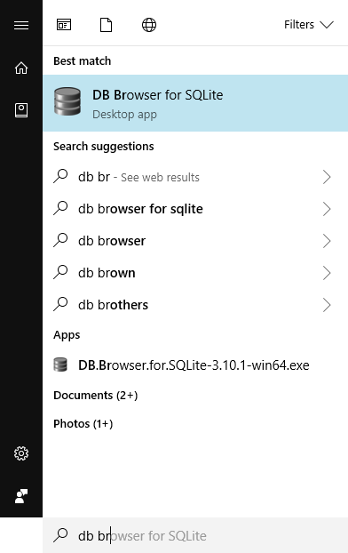
The Initial screen
The initial screen of DB Browser will look something like this, the panes may be in a different configuration;
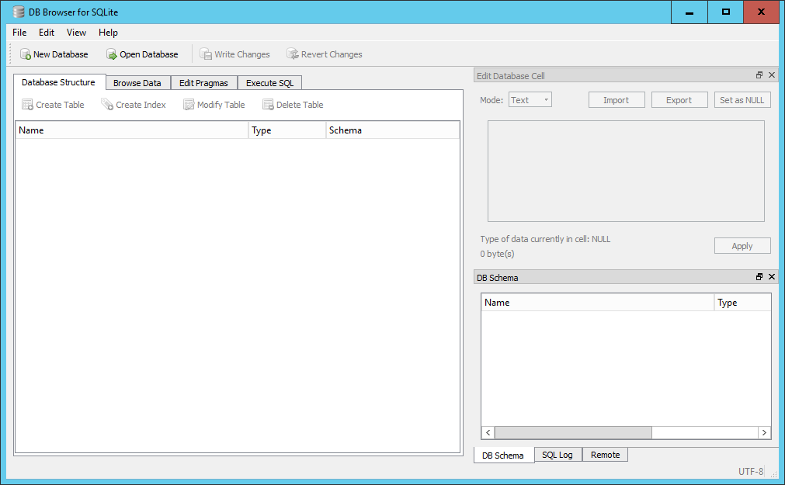
There is;
A small menu system consisting of File, Edit, View and Help.
Below the menu system is a toolbar with four options; New Database, Open Database, Write Changes and Revert Changes.
Below the toolbar is a 4-tabbed pane for; Database Structure, Browse Data, Edit Pragmas and Execute SQL. Initially these will be quite empty as we haven't created or opened a database yet. In general we will see how each of these are used as we go through the lesson with the exception of the Edit Pragmas tab which deals with system wide parameters which we won't want to change.
On the right hand side there are two further panes, at the top is the Edit Database Cell pane which is grayed out. Below it is a 3-tabbed pane for DB Schema, SQL log and Remote. We are only really interested in the DB Schema tab.
Initial changes to the layout.
The overall layout of DB Browser is quite flexible. The panes on the right-hand side can be dragged and dropped into any position, the individual tabs on the bottom pane closed directly from the pane and re-opened from the menu View item.
We will make a couple of initial changes to the layout of the screen. These will be retained across sessions.
- From the View menu item un-select the 'Edit Database Cell' icon to the left of the text. This will make the pane close and the bottom pane will be expanded automatically to fill the space.
- a) On Windows, From the View menu item select 'preferences' and select the Data Browser tab.
- b) On Mac, From the "DB Browser for SQLite" menu item select 'preferences' and select the Data Browser tab.
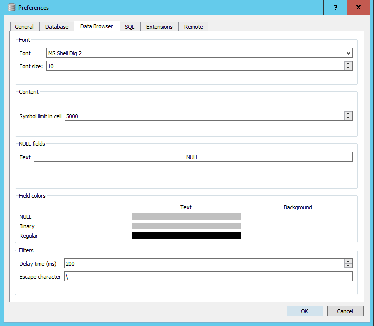
Towards the bottom there is a section dealing with Field colors. You will see three bars below the word Text, to the right there are in fact three invisible bars for the Background. Click in the area for the Background color for NULL. A colour selector window will open, select Red. The bar will turn Red. This is now the default background cell colour that will be used to display NULL values in you tables. We will discuss the meaning of NULL values in a table in a later episode.
You can now close the preference window by clicking OK.
Opening a database
For this lesson we will be making extensive use of the SQL_SAFI database. If you do not already have a copy of this database you can download it from here.
To open the database in DB Browser do the following;
- Click on the 'open database' button in the toolbar.
- Navigate to where you have stored the database file on your local machine, select it and click open.
When you open the database, the 'Database Structure' tab on the left and the 'DB Schema' pane on the right will look very similar.
A Schema in its simplest form is a description of the table, in terms of column names and data types of the columns.
However the 'DB Schema' pane is only there to allow you to see the details of the schema for the tables. In particular what tables are in the database and the fields and their types which are in each table.
The 'Database Structure' tab on the left allows you to initiate actions on the tables.
If you right click on a table name in the 'DB Schema' pane, nothing happens.
However, if you do the same in the 'Database Structure' menu you will be given a set of possible actions.
These are the same actions that are available from the toolbar at the top of the tab.
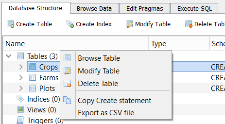
If you select 'Browse Table', the data from the table is loaded into the 'Browse Data' pane from where it can be examined or filtered.
You can also select the table you wish to Browse directly from here.
There are options for 'New Record' and 'Delete Record'. As our interest is in analysing existing data not creating or deleting data, it is unlikely that you will want to use these options.
Running SQL Queries
We will be running queries extensively in future episodes. For now we will just provide an outline of the environment.
In the left hand pane if you select the Execute SQL tab, you will be presented with a three paned window and a small toolbar.
The top pane is itself tabbed with the initial tab labeled 'SQL 1'. This is the SQL editor pane into which you will type your queries.
Below is a simple example query and the results.
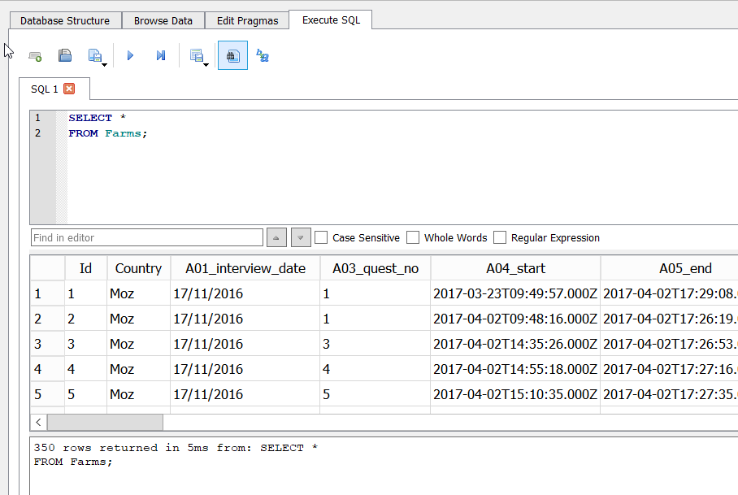
Notice that the query has been written over multiple lines. This is commonly done to aid readability.
The second pane has the tabular results, and the bottom pane has a message indicating how many rows were returned, how long it took and a copy of the SQL statement that was executed.
On the toolbar at the top there are eight buttons. Left to right they are:
- Open Tab (creates a new tab in the editor)
- Open SQL file (allows you to load a prepared file of SQL into the editor - the tab takes the name of he file)
- Save SQL file (allows you to save the current contents of the active pane to the local file system)
- Execute SQL (Executes all of the SQL statements in the editor pane)
- Execute current line (Actually executes whatever is selected)
- Save Results (Either to a CSV file or as a database view. We will look at views in a later episode)
- Find (Text in the editor window)
- Find & Replace (Text in the editor window)
Because it is possible to have and execute multiple SQL statements in the same editor pane, each must be terminated with a ';'.
If you only have a single statement you don't need it, but it might be considered best practice to always include it.
The pane below the editor is the Results pane. The results of running your query will appear here in a simple tabular format.
The bottom pane is for messages about the execution, either an error message or an indication of how many rows were returned by the query.
Creating a database
As well as opening (connecting) to existing databases it is also possible to create new SQLite databases and tables using DB Browser.
To create a database click the New Database button from the main toolbar (also available from the File menu). You will initially be asked for a name for the database and where you want to save it. It is saved as a single file. You can choose your own extension but 'sqlite' is recommended. If you do not provide an extension, then a '.db' extension will be used. Although the new database is empty, in that there are no tables in it, the .sqlite file itself is not empty.
Once you have saved the database file the Create Table wizard will open allowing you to create a table. You can cancel this as we will be going through the create table process in a later episode.
Write Changes & Revert Changes
Much of our SQL work involves looking at existing data using SQL queries and possibly writing out the results to a CSV file, in general we will not be changing the contents of the database.
However if, during your DB Browser session, you were to create or delete a table or create a view (discussed later), then the changes are not automatically written to the database file.
When you try to end the session (i.e. close the application) in which you have made such changes, then you will be asked if you want to save the changes you have made.
Alternatively you can explicitly save changes or revert changes during a session by use of the Write Changes and Revert Changes buttons on the toolbar.
Once written the changes are permanent (there is no concept of multiple 'undo' like you might have in other programs).
Revert Changes will take you back to the last Written copy.
The select statement
Definition of SQL
SQL or Structured Query Language is an international standard for manipulating data in a relational database.
Each Relational Database system like Oracle, MySQL or SQLite implements its own variation of the standard.
Fortunately for the types of commands and queries that we will want to write, all of the implementations are much in agreement.
The SELECT queries we will be writing to access data in our SQLite database will execute un-altered in many of the other environments.
Essentially you only have to learn SQL once.
SQL and Relational database tables
The strength of SQL is that a single SQL statement or query can request data be returned from one or many of the tables in the database.
You can essentially define the relationships between tables on-the-fly as part of your query statement. Relationships between tables are often included as part of the overall database design. In our situation we may be getting an assortment of tables from different sources so being able to imply the relationship as part of the query has definite advantages.
DDL and DML
DDL stands for Data Definition Language. It is the set of SQL commands used to create alter of delete database objects such as tables.
DML stands for Data Manipulation Language. For our purposes this is the SELECT command which is used to extract data items from one or more of the database tables.
Simple SQL queries using the Select statement
For the rest of this episode we will be looking at the SELECT statement.
To follow along, you should open the DB Browser application and connect to the SQL_SAFI database.
In SQL, querying data is performed by a SELECT statement. A select statement has 6 key components;
SELECT colnames FROM tablename WHERE conditions GROUP BY colnames HAVING conditions ORDER BY colnames
In practice very few queries will have all of these clauses in them simplifying many queries. On the other hand, conditions in the WHERE clause can be arbitrarily complex and if you need to JOIN two or more tables together then more clauses (JOIN and ON) are needed.
All of the clause names above have been written in uppercase for clarity. SQL is not case sensitive. Neither do you need to write each clause on a new line, but it is often clearer to do so for all but the simplest of queries.
In this episode we will start with the very simple and work our way up to the more complex.
The simplest query is effectively one which returns the contents of the whole table
SELECT * FROM Farms;
It is better practice and generally more efficient to explicitly list the column names that you want returned.
SELECT Country, A06_province, A07_district, A08_ward, A09_village FROM Farms;
The '*' character acts as a wildcard meaning all of the columns but you cannot use it as a general wildcard.
So for example, the following is not valid.
SELECT A* FROM Farms;
If you run it you will get an error.
When an error does occur you will see an error message displayed in the bottom pane.
In addition to limiting the columns returned by a query, you can also limit the rows returned. The simplest case is to say how many rows are wanted using the Limit clause. In the example below only the first ten rows of the result of the query will be returned. This is useful if you just want to get a feel for what the data looks like.
SELECT * FROM Farms LIMIT 10;
Exercise
Write a query which returns the first 5 rows from the Farms table with only the columns Id, and B16 to B20.
Solution - click me
Solution
SELECT Id , B16_years_liv , B17_parents_liv , B18_sp_parents_liv , B19_grand_liv , B20_sp_grand_liv FROM Farms LIMIT 5;
Because the query uses several columns (with longish names), for readability they have been set out on separate lines. SQL takes of white space to you are free to arrange the text of the query as you like.
The Where clause
Usually you will want to restrict the rows returned based on some criteria. i.e. certain values or ranges within one or more columns.
In this example we are only interested in rows where the value in the B16_years_liv column is greater than 25
SELECT Id, B16_years_liv FROM Farms WHERE B16_years_liv > 25 ;
In addition to using the '>' we can use many other operators such as <, <=, =, >=, <>
SELECT Id, B17_parents_liv FROM Farms WHERE B17_parents_liv = 'yes' ;
Using more complex logical expressions in the Where clause
We can also use the AND and OR keywords to build more complex selection criteria.
SELECT Id FROM Farms WHERE B17_parents_liv = 'yes' AND B18_sp_parents_liv = 'yes' AND B19_grand_liv = 'yes' AND B20_sp_grand_liv = 'yes' ;
Notice that the columns being used in the WHERE clause do not need to returned as part of the SELECT clause.
You can ensure the precedence of the operators by using brackets. Judicious use of brackets can also aid readability
SELECT Id FROM Farms WHERE (B17_parents_liv = 'yes' OR B18_sp_parents_liv = 'yes') AND B16_years_liv > 60 ;
Exercise
From the above query, breakdown the
Whereclause so that each component can be tested individually.
Make a note of how many rows are returned in each case.
Solution - click me
Solution
To test each of the or clauses
SELECT Id FROM Farms WHERE B17_parents_liv = 'yes' ; SELECT Id FROM Farms WHERE B18_sp_parents_liv = 'yes' ; SELECT Id FROM Farms WHERE (B17_parents_liv = 'yes' OR B18_sp_parents_liv = 'yes') ; SELECT Id FROM Farms WHERE B16_years_liv > 60 ;
OR generally creates a less restrictive condition and AND makes a more restrictive condition.
The following query returns the rows where the value of B16_years_liv is in the range 51 to 59 inclusive.
SELECT Id, B16_years_liv FROM Farms WHERE B16_years_liv > 50 AND B16_years_liv < 60 ;
The same results could be obtained by using the BETWEEN or IN operators
SELECT Id, B16_years_liv FROM Farms WHERE B16_years_liv BETWEEN 51 AND 59 ;
SELECT Id, B16_years_liv FROM Farms WHERE B16_years_liv IN (51, 52, 53, 54, 55, 56, 57, 58, 59) ;
The list of values in brackets do not have to be contiguous or even in order.
Exercise
Write a query using the Farms table which returns the columns
Id,A09_village,A11_years_farm,B16_years_liv. We are only interested in rows where theA09_villagevalue is either 'God' or 'Ruaca'. Additionally we only wantA11_years_farmvalues in the range 20 to 30 exclusive andB16_years_livvalues strictly greater than 40. There are many ways of doing this, but try to use an inequality, anINclause and aBETWEENclause.
Solution - click me
Solution
SELECT Id, A09_village, A11_years_farm, B16_years_liv FROM Farms WHERE A09_village IN ('God', 'Ruaca') AND A11_years_farm BETWEEN 21 AND 29 AND B16_years_liv > 40 ;
Sorting results
If you want the results of your query to appear in a specific order, you can use the ORDER BY clause
SELECT Id, A09_village, A11_years_farm, B16_years_liv FROM Farms WHERE A09_village = 'God' ORDER BY A11_years_farm ;
By default the SQL assumes Ascending order. You can make this more explicit by using the ASC or DESC keywords.
SELECT Id, A09_village, A11_years_farm, B16_years_liv FROM Farms WHERE A09_village = 'God' ORDER BY A11_years_farm DESC ;
You can also order by multiple columns
SELECT Id, A09_village, A11_years_farm, B16_years_liv FROM Farms WHERE A09_village = 'God' ORDER BY A11_years_farm DESC , B16_years_liv ASC ;
Missing data
How does the database represents missing data
At the beginning of this lesson we noted that all database systems have the concept of a NULL value; Something which is missing and nothing is known about it.
In DB Browser we can choose how we want NULLs in a table to be displayed. When we had our initial look at DB Browser,
we used the View | Preference option to change the background colour of cells in a table which has a NULL values as red.
The example below, using the 'Browse data' tab, shows a section of the Farms table in the SQL_SAFI database showing column values which are NULL.
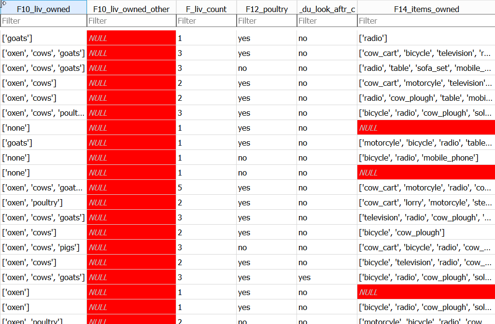
If you type '=NULL' in the filter box for F14_items_owned, only the rows with NULL in F14_items_owned will be displayed.
You can get the same results using the following query;
SELECT * FROM Farms WHERE F14_items_owned IS NULL ;
Notice that we use IS and not =. This is because 'NULL' equals nothing and everything all at the same time!
This table was created from a csv file, part of which looks like this
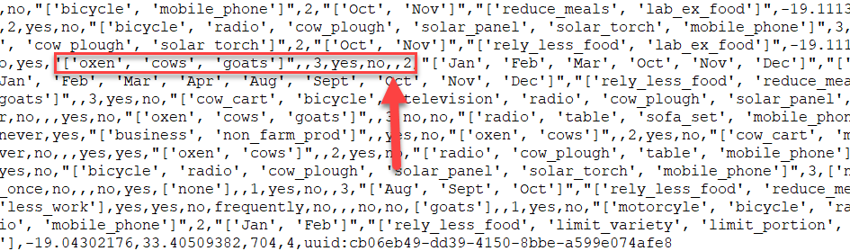
The highlighted area shows part of the record with Id = 21, the second record returned by the query. It starts with the 'F10_liv_owned' column and ends with the 'G01_no_meals' column. The Arrow points to the two consecutive ','s representing the lack of a value for the 'F14_items_owned' column. These values are missing from the data.
Reasons for Missing data
There can be many reasons why data is missing; Not collected, lost, Not applicable etc.
In the case of our Farms table, many of the missing values have occurred as a result of the survey design.
If you run the following query :
SELECT E01_water_use, E_no_group_count, E_yes_group_count FROM Farms ;
The first part of the results will look like this:
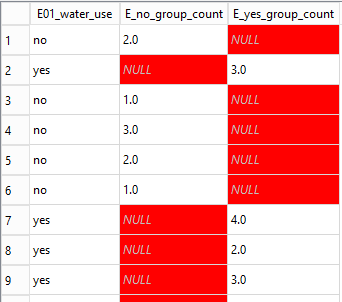
You may be able to spot from this the relationship between the values in the E01_water_use column and whether or not there is a NULL value in either the E_no_group_count or the E_yes_group_count column.
Only if the Farmer said that they did use water (E01_water_use = 'yes') they were asked how many plots they used water on and the value stored in E_yes_group_count otherwise this field was not even presented in the survey and so contains a NULL value. In this situation we expect NULL values and they will not cause any problems.
However the F14_items_owned column records the possessions of the Farmer. This question was always asked. It is not clear from the NULL values we find in this field whether or not it means 'I have no possessions' or 'I do not wish to tell you what possessions I have', in short, we know nothing about the items owned and therefore the value of NULL is appropriate.
Dealing with missing data
There are several statistical techniques that can be used to allow for NULL values, which one you might will depend on what has caused the NULL value to be recorded.
You may want to change the NULL value to something else. For example if we knew that the NULL values in the F14_items_owned column actually meant that the Farmer had no possessions then we might want to change the NULL values to '[]' to represent and empty list. We can do that in SQL with an UPDATE query.
The update query is shown below. We are not going to run it as it would change our data.
You need to be very sure of the effect you are going to have before you change data in this way.
UPDATE Farms SET F14_items_owned = '[]' WHERE F14_items_owned is NULL ;
Rather than changing the data we may just want to miss it out of our analysis.
We can write a query which excludes the rows where F14_items_owned has a `NULL value with:
SELECT * from Farms WHERE F14_items_owned IS NOT NULL ;
Creating New Columns
Creating new columns
In addition to selecting existing columns from a table, you can also create new columns in the query output based on the existing columns. These new columns only exist in the output. The table used in the query is not changed in any way.
The Plots table contains a column, D02_total_plot representing the area of the plot and the D03_unit_land column gives the units. In our sample dataset the unit is always 'hectare'. However in the full dataset some of the plot areas are recorded in 'acres'. We want to create a new output column which shows the hectare value converted into acres. To do this we could use the following SQL. ( 1 hectare = 2.4701 acres)
SELECT D02_total_plot * 2.4701 FROM Plots ;
Running this query will give the correct answers, but it uses the expression used in creating the new column as the column name.
This looks very messy, especially if the expression is long.
It is always the case that if you create a column in the results of the query it won't have a name by default.
SQL will create one for it. Other relational databases take different approaches to the problem and will pseudo-randomly name the new columns for you with such things as '_c0'.
SQLite uses the expression you used to create the column name.
Renaming columns using alias'
Given that creating new columns is so commonly done, SQL does provide a mechansim for giving them names of your choice. This is done using the AS clause
SELECT D02_total_plot * 2.4701 AS D02_total_plot_converted FROM Plots ;
The AS keyword itself is optional. You can just put the name of the new column, but using the AS keyword adds clarity. Creating column names in this way is referred to as adding an alias.
This may seem a bit strange for columns which had no real name in the first place, but the point is, you can give any table column name an alias to be used in the output rather than the original.
Using built-in functions to create new values
In addition to using simple arithmetic operations to create new columns, you can also use some of the SQLite builtin functions.
Full details of the available builtin functions are available from the SQLite.org website.
We will look at some of the arithmetic and statistical functions when we deal with aggregations in a later lesson.
You may have noticed in the output from are last query that the number of decimal places can change from one row to another. In order to make the output more tidy, we may wish to always produce the same number of decimal places , e.g. 2. We can do this using the ROUND function.
The ROUND function works in a similar way as its spreadsheet equivalent, you specify the value you wish to round and the required number of decimal places.
SELECT ROUND(D02_total_plot * 2.4701, 2) as D02_total_plot_converted FROM Plots ;
Exercise
Write an SQL query which returns the Id, plot_Id, D01_curr_plot and D02_total_plot columns from the Plots table with the addition of a calculated column representing the plot area in acres and a column representing the units of the calculated column.
Solution - click me
Solution
SELECT Id, plot_Id, D01_curr_plot, D02_total_plot, ROUND(D02_total_plot * 2.4701, 2) AS D02_total_plot_converted, 'acres' AS D03_unit_land_converted FROM Plots ;
Notice that we can use columns as part of the calculated column which are not returned in the output.
Also our second new column doesn't actually need to make use of any of the other columns, it can just be a value.
SQLite has several string manipulation functions, many of which have equivalents in other programming languages or spreadsheet systems, sometimes with different names.
| SQLite function | Excel equivalent |
|---|---|
| substr(a,b,c) | mid(a,b,c) |
| instr(a,b) | find(a,b) |
instr can be used to check if a character or string of characters occurs within another string.
substr can be used to extract a portion of a string based on a starting position and the number of characters required.
Using Dates
In the Farms table, the three columns A01_interview_date, A04_start and A05_end are all recognisable as a dates with the A04_srtart and A05_end also including times. These last two are automatically generated by the eSurvey software when the data is collected. I.e. they are automatically entered. The 01_interview_date however is manually input. In all three cases however SQLite thinks that they are all just strings of characters. We can confirm this by selecting the Database Structure tab and expanding the Farms entry and notice that the data type for all three columns is listed as 'TEXT'
To see what these columns look like you can run the following query;
SELECT A01_interview_date, A04_start, A05_end FROM Farms ;
The format of the A04_start and A05_end columns follow the ISO-8601 stardard for representing dates and times. The A01_interview_date column on the other hand uses the shorthand dd/mm/yyyy format.
The drawback of having dates represented by strings occurs when you want to sort them.
In SQL you can sort the output of your query by using an ORDER BYclause at the end of the select statement as we have seen.
SELECT A01_interview_date FROM Farms ORDER BY A01_interview_date ;
NB. we are using the UK and European representation of dates in this dicussion. The same issue will occur if you were using US date formats
It is unlikely that the results of the above query is what you wanted. '01/07/2017' has been ordered before '01/12/2016'. This is because the sorting process treats the dates as simple strings and a '0' in the month position is less than a '1' in the month position.
In order to sort the A01_interview_date column into date order we need to make SQLite see it as a date. SQLite does have a date function. Unfortunately by itself, it won't work on A01_interview_date.
SELECT A01_interview_date, date(A01_interview_date) AS converted_A01, A04_start, date(A04_start) AS coverted_A04 FROM Farms ;
Although it doesn't produce an error, the attempted conversion of A01_interview_date into a date format has failed. A set of NULLs was returned.
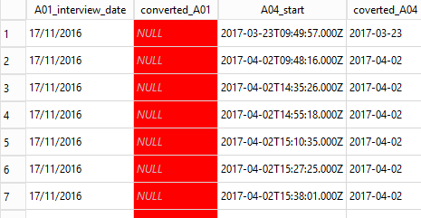
On the otherhand the A04_start conversion did work. The problem is that the date function expects the string to be converted to be in a certain format.; like ISO-8601.
We need to change the way A01_interview_date looks. Instead of dd/mm/yyyy we need yyyy-mm-dd. To do this we can use the substr function along with the ||
operator which is used to concatenate strings together.
We can extract individual parts of the date like this;
SELECT A01_interview_date, substr(A01_interview_date,7,4) as year, substr(A01_interview_date,4,2) as month, substr(A01_interview_date,1,2) as day FROM Farms ;
But in order to convert it into a date we need all three parts concatenated together along with '-' to seperate the parts
SELECT A01_interview_date, substr(A01_interview_date,7,4) || '-' || substr(A01_interview_date,4,2) || '-' || substr(A01_interview_date,1,2) as converted_date FROM Farms ;
We can then convert our new string containing the date into a proper date by passing it to the date function.
SELECT A01_interview_date, date( substr(A01_interview_date,7,4) || '-' || substr(A01_interview_date,4,2) || '-' || substr(A01_interview_date,1,2) ) as converted_date FROM Farms ;
We can now use our converted_date column to sort by
SELECT A01_interview_date, date( substr(A01_interview_date,7,4) || '-' || substr(A01_interview_date,4,2) || '-' || substr(A01_interview_date,1,2) ) as converted_date FROM Farms ORDER BY converted_date ;
Exercise
Change the query above to sort by the
A01_interview_datefield and compare the results
Solution - click me
Solution
SELECT A01_interview_date, date( substr(A01_interview_date,7,4) || '-' || substr(A01_interview_date,4,2) || '-' || substr(A01_interview_date,1,2) ) as converted_date FROM Farms ORDER BY A01_interview_date ;
we started off by using the substr function to break out the day, month and year components of the date. There is merit in leaving the data in this format as it will still allow us to sort by the individual components.
SELECT A01_interview_date, substr(A01_interview_date,7,4) as year, substr(A01_interview_date,4,2) as month, substr(A01_interview_date,1,2) as day FROM Farms ORDER BY year, month, day ;
By default the ORDER BY clause will sort in ascending order, smallest to biggist, we can make this explicit by usingthe ASC keyword. Or if we want to sort in descending order we can use the DESC keyword.
SELECT A01_interview_date, substr(A01_interview_date,7,4) as year, substr(A01_interview_date,4,2) as month, substr(A01_interview_date,1,2) as day FROM Farms ORDER BY year DESC, month DESC, day DESC ;
Seperating dates into compnents like this make them universal. i.e. a dataset in this form can be written in any country's locale and then imported using a different country's locale without the possibility of confusion.
Using SQL syntax to conditionally create new values
This format of the case statement allows you to check if various values are equal to the value in the field given after the case keyword.
SELECT Id, country, CASE country WHEN 'Moz' THEN 'Mozambique' WHEN 'Taz' THEN 'Tanzania' ELSE 'Unknown Country' END AS country_fullname FROM Farms ;
There is a more general form which allows us to perform any kind of test.
Using SQL syntax to create ‘binned’ values
It is often the case that we wish to convert a continous variable into a discrete factor type variable.
We can use a case statement to create this type of effect.
The column A11_years_farm in the Farms table is an indication of how many years the respondent has been on the farm. The values are in years and range from 1 tp 60.
Instead of using individual years we may want to group these values into ranges like 1-10, 11-20 etc. We can do this using a case statement as part of the SELECT clause.
SELECT Id, A11_years_farm, CASE WHEN A11_years_farm BETWEEN 1 AND 10 THEN '1-10' WHEN A11_years_farm BETWEEN 11 AND 20 THEN '11-20' WHEN A11_years_farm BETWEEN 21 AND 30 THEN '21-30' WHEN A11_years_farm BETWEEN 31 AND 40 THEN '31-40' WHEN A11_years_farm BETWEEN 41 AND 50 THEN '41-50' WHEN A11_years_farm BETWEEN 41 AND 50 THEN '51-60' ELSE '> 60' END AS A11_years_farm_range FROM Farms ;
Aggregations
Using built-in statistical functions
Aggregate functions are used perform some kind of mathematical or statistical calculation across a group of rows. The rows in each group are determined
by the different values in a specified column or columns. Alternatively you can aggregate across the entire table.
If we wanted to know the minimum, average and maximum values of the 'A11_years_farm' column across the whole Farms table, we could write a query such as this;
select min(A11_years_farm), max(A11_years_farm), avg(A11_years_farm) from Farms;
This sort of query provides us with a general view of the values for a particular column or field across the whole table.
min , max and avg are builtin aggregate functions in SQLite (and any other SQL database system). There are other such functions available. A complete list can be found in the SQLite documentation here
It is more likely that we would want to find such values for a range, or multiple ranges of rows where each range is determined by the values of some other column in the table. Before we do this we will look at how we can find out what different values are contained in a given column.
The Distinct keyword
For the SAFI survey, it was know in advance all of the possible values that certain variables of columns could contain. For example the 'A06_province', 'A07_district', 'A08_ward' and 'A09_village' variables could only ever contain a few specific values.
As the SAFI survey was delivered via an Android phone app. It was possible to create the app so that the possible values could be
selected from a dropdown list, eliminating any possibility of typing errors. For the 'A06_province' there were only three possibilities, but by the time we get down to 'A09_villages', a far more specific geography, it would not have been possible to anticipate in advance all of the possible values (village names)
and so the values for this field were manually typed in.
To obtain a list of unique values in a particular column we can use the Distinct keyword.
Using the Farms table we will obtain a list of all of the different values of the 'A06_province' column contained in the table.
select distinct A06_province from Farms;
We can see from the results of running this that all 3 values are represented and that there is no missing data in this field.
However if we run a similar query for 'A09_village'
select distinct A09_village from Farms;
We get
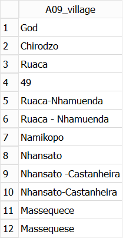
The problem with allowing free-form text is quite obvious. Having two villages, one called 'Massequece' and the other called 'Massequese' is unlikely.
Detecting this type of problem in a large dataset can be very difficult if you are just 'eyeballing' the content. This small SQL query makes it very clear.
You can have more than one column name after the Distinct keyword. In which case the results will include a row for each unique combination of the columns involved
Exercise
Write a query that will return all of the different combinations of the
'A06_province', 'A07_district', 'A08_ward' and 'A09_village' columns in the Farms table.When looking at the results, you may have noticed that they are not in any sorted order. Re-write the query so that the values of the four columns
are returned in alphabetical order.
Solution - click me
Solution
select distinct A06_province, A07_district, A08_ward, A09_village from Farms order by A06_province, A07_district, A08_ward, A09_village;
The group by clause to summarise data
Just knowing the combinations is of limited use. You really want to know How many of each of the values there are.
To do this we use the GROUP BY clause.
select A08_ward, count(*) as How_many from Farms group by A08_ward;
This query tells us how many records in the table have each different value in the 'A08_ward' column.
In the first example of this episode, three aggregations were performed over the single column 'A11_years_farm'. In addition to calculating multiple aggregation values over a single column, it is also possible to aggregate over multiple columns by specifying them in all in the SELECT clause and the GROUP BY clause.
The grouping will take place based on the order of the columns listed in the GROUP BY clause. There will be one row returned for each unique combination of the columns mentioned in the GROUP BY clause.
What is not allowed is specifying a non-aggregated column in the select clause which is not mentioned in the group by clause.
select A06_province, A07_district, A08_ward, A09_village, count(*) as How_many from Farms Group By A06_province, A07_district, A08_ward, A09_village ;
Exercise
Write a query which returns the min, max and avg values as well as a count of the number of records involved for the 'A11_years_farm' column for each village in the 'Nhamatanda' district.
Solution - click me
Solution
select A09_village, min(A11_years_farm) as min, max(A11_years_farm) as max, avg(A11_years_farm) as avg, count(*) as how_many from Farms where A07_district = 'Nhamatanda' group by A09_village;
Notice that you can use the 'A07_district' column in the where clause but it doesn't have to appear in the select clause.
Using the having clause
In order to filter the rows returned in a non-aggregated query we used the WHERE clause. For an aggregated query the equivalent is the 'HAVING` clause.
You use the 'HAVING` clause by providing it with a filter expression which references one or more of the aggregated columns.
In a HAVING clause you can use the column alias to refer to the aggregated column.
select A08_ward, min(A11_years_farm) as min_years, max(A11_years_farm) as max_years, count(*) as how_many_farms from Farms group by A08_ward having how_many_farms > 2;
In this example we want to ignore the wards which only have one or two farms.
Exercise
Using the Crops table write a query which will list all of the crops (D_curr_crop) which are grown in over 100 plots.
Solution - click me
Solution
select D_curr_crop, count(*) as how_many from Crops group by D_curr_crop having how_many > 100 ;
Creating Tables and Views
Using SQL code to create tables
In relational databases, tables have to be created before you can add data to them.
The table definition that you create is referred to as the Schema of the table.
The schema can contain many different properties of the table and the data that it does/will contain.
In its simplest form you only need to specify a name for the table and a list of the column names and the data types for each of those columns.
Initially your data is likely to be external to the relational database system in a set of simple files.
Typically in CSV (comma separated values) or Tab delimited format.
All relational database systems will have some utility which will allow you to import such files into tables in the database.
The DB Browser application has a nice GUI (Graphical Use Interface) to allow you to do this. It appears to be a single step process, much like importing a file into Excel. In fact it is always a two step process.
The Farms, Plots and Crops tables that we have been using were created in the DB Browser application by importing a CSV
file containing the data.
For large datasets this is a very common approach
Using the DB Browser application to create tables
-
From the File menu select Import and then 'Table from CSV file'.
This will start the 'Import CSV file' wizard and you will be asked to select the file of data you wish to import from a standard Windows file open dialog. -
After you have selected the file, you will be shown the 'Import CSV file' window which will allow you to set a name for the table (the default is taken from the filename). You will see the first few rows of the data and there are a few options which can be changed if needs be.
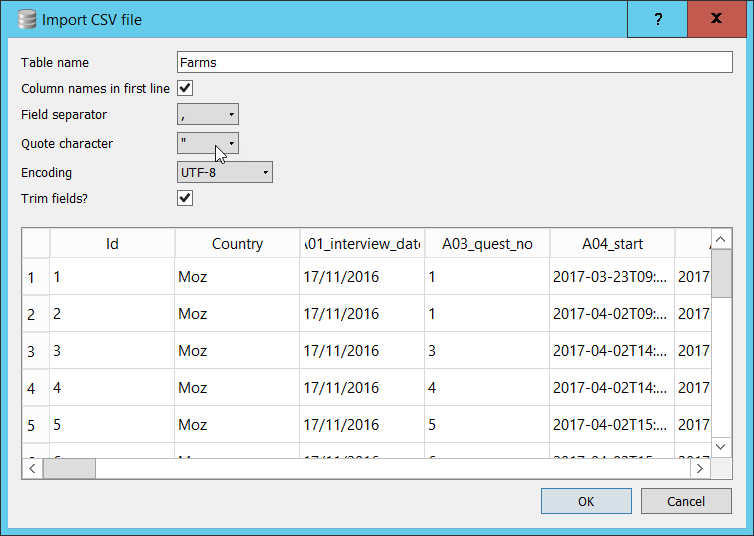
In our case all of the options are correctly set. If your file was in Tab delimited format, you would need to change the 'Field separator' option to 'Tab'. If your file did not have a header row with column names you would un-check the appropriate box and DB Browser will allocate names for the columns. (You can change them to more meaningful names yourself after the import is complete)
- When you click OK, a table will be created and the data loaded into the table. Unfortunately this Import wizard in DB Browser does not do, or allow you to do everything that you might want when creating a table. The most obvious potential problem is that we were not allowed to specify the data types to be associated with each of the columns in the table. However, DB Browser will attempt to work out the appropriate data types based on the values in the first few rows of the data. This is a very common approach.
(Earlier versions of DB Browser didn't do this, it just imported all of the columns as 'Text' data types.) If you go to the table in the Database Structure tab and click the '>' you will see all of the fields and they are all listed as either Text or Integer fields.
If any of the datatypes are not as expected or wanted we can change them.
- Select the newly created table in Database Structure tab and click the 'Modify Table' button in the toolbar. The 'Edit Table Definition' dialog will appear.
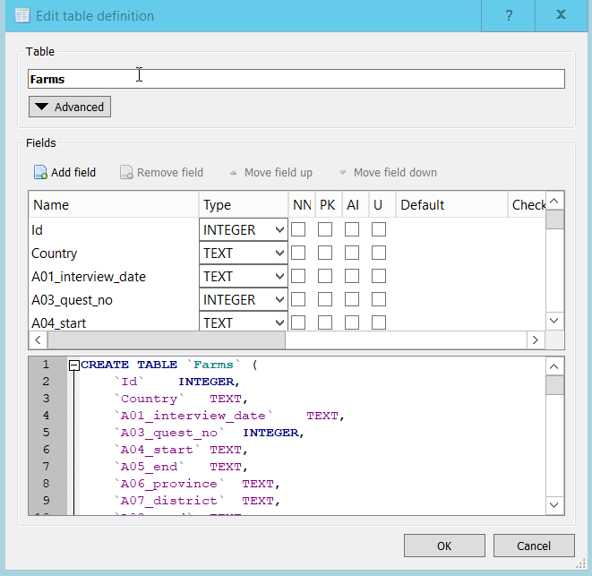
In this particular case DB Browser correctly selected the datatypes. Notice that the A01_interview_date was allocated a datatype of 'TEXT'. This isn't a problem as we have to use the Date and Time functions to manipulate dates anyway.
Notice that the bottom pane in the Window shows the SQL DDL statement that would create the table that you modifying.
When you change one of the columns from TEXT to INTEGER, this is immediately reflected in the Create Table statement. It is slightly misleading because in fact we are modifying an existing table and in SQL-speak, this would be an Alter Table... statement. However it does illustrate quite well the fact that whatever you do in the GUI, it is essentially translated into an SQL statement and executed.
In addition to changing the data types there are several other options which can be set when you are creating of modifying a table.
For our tables we don't need to make use of them but for completeness we will describe what they are;
PK - Or Primary Key, a unique identifier for the row. In the Farms table, there is an Id column which uniquely identifies a Farm.
This could act as a unique identifier for the row as a whole. We could mark this as the primary key if we wanted to.
AI - Or Auto Increment. This isn't really applicable to tables created in this way, i.e. the creation of the schema immediately followed by loading data from a file. It is usually used to generate unique values for a column which could then act as a primary key. If you have an 'Auto Increment' column in a table, when you insert values you would not supply a value for the column as SQLite will automatically provide a value for each row added.
Not Null - If this is checked then it means that there must be a value for each row in this column. If it is not set and there is no value provided in the data then it will be set to 'NULL' which means 'I know nothing about what should be here'. (Not the string 'NULL' but the NULL value)
In real datasets missing values are quite common and we have already looked at ways of dealing with them when they occur in tables. If you you were check this box and the data did have missing values for this column, the record from the file would be rejected and the load of the file will fail.
U - Or Unique. This allows you to say that the contents of the column, which is not the primary key column has to have unique values in it. Like Allow Null this is another way of providing some data validation as the data is imported. Although it doesn't really apply with the DB Browser import wizard as the data is imported before you are allowed to set this option.
Default - This is used in conjunction with 'Not Null', if a value is not provided in the dataset, then if provided, the default value for that column will be used.
Check - This allows you to specify a constraint on the values entered for the column. You could restrict the range of values or compare the value with other columns values.
These three options, 'Not Null', 'Unique' and 'Default' , need to be used with caution and certainly their use needs to be fully documented and explained.
Exercise
From the Modify table dialog, change the
Idcolumn in theFarmstable to be the primary key. What difference did it make in theCREATE TABLEstatement?
Solution - click me
Solution
You need to scroll down to the bottom of the CREATE TABLE statement to see the
PRIMARY KEY(`Id`)
line added
You could copy and paste this definition into the SQL editor and if you change the table name before you ran it, you would create a new table with that name. This new table would have no data in it. This is how the insert table wizard works. It uses the header row from your data to create a CREATE TABLE statement which it runs. It then transforms each of the rows of data into SQL INSERT INTO... statements which it also runs to get the data into the table. Hence the 2-step process.
Using CREATE TABLE and INSERT INTO... statements is only really practical for small tables. For larger tables directly loading into the database is the only practical approach, and most commonly from simple csv type files.
Creating tables from other tables
Whenever you write a Select query and run it, the results are always in the form of a table.
In the results pane, you can see the column names and the rows of data in the results.
This provides a very easy way of creating a new table based on the results of a query.
The following query selects a few of the columns from the Farms table
SELECT Id, Country, A06_province, A07_district, A08_ward, A09_village FROM Farms;
If you want to make the results of this query into a new table, you can do so by simply prefixing the SELECT with CREATE TABLE NewTablename AS like this
CREATE TABLE Farms_location AS SELECT Id, Country, A06_province, A07_district, A08_ward, A09_village FROM Farms;
If we wanted to create a table from the Crops table which contains only the rows where the D_curr_crop value was 'rice' we could use a query like this:
CREATE TABLE crops_rice AS SELECT * FROM Crops WHERE D_curr_crop = 'rice' ;
Here we want all of the columns from the Crops table but only if the D_curr_crop value is 'rice'.
Note: please ensure that you run the code above as we will use this new table in a later lesson.
Using SQL code to create views
In addition to tables all relational database systems have the concept of 'Views'. Views are based on tables.
In the same way that we were able to create a table based on a SELECT query, we can create a 'View' in the same way. You just replace 'Table' with 'View'.
CREATE VIEW Farms_location AS SELECT Id, Country, A06_province, A07_district, A08_ward, A09_village FROM Farms;
Tables and Views are so closely related that if you try to run the code above, although 'Table' has been changed to 'View' you will get an error complaining that the 'Table' already exists.
It is common practice when creating Views to indicate somewhere in the name that it is in fact a View. e.g. vFarms_location or Farms_location_v.
Although tables and views can be used almost interchangeably in Select queries it is important to note that a View unlike a Table contains no data. It is essentially the SQL statement needed to produce that data from the underlying data. This means that when you use a View there is the overhead of having to run this SQL first. Although in practice the Database system will combine the SQL required by the View and the other SQL in your query so as to optimise how the SQL is executed.
The advantage of using Views is that it allows you to restrict how you see the data in a table. In the example we used above it may be far easier to work with only the 6 columns that we need from the full Farms table rather than the full table with 61 columns.
A View isn't restricted to simple Select statements it can be the result of aggregations and joins as well. This can help reduce the complexity of queries based on the View and so aid readability.
Joins
About table joins
In any relational database system, the ability to join tables together is a key querying requirement. Joins are used to combine the columns from two (or more) tables together to form a single table. A join between tables will only be possible if they have at least one column in common. The column doesn't have to have the same name in each table, and quite often they won’t, but they do have to have a common usage.
In the SAFI database we have three tables. Farms, Plots and Crops. Each farm has a number of plots (or fields) and each plot can be used to grow different crops. A question you might ask is: Which Farms with more than 12 people in the household grow Maize? No single table has the answer to this question.
We can write queries to answer each part separately
-- how many crops of Maize? select * from Crops where D_curr_crop = 'maize' ;
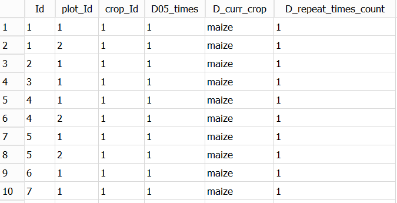
and
-- Which farms have more than 12 in the Household select Id, B_no_membrs from Farms where B_no_membrs > 12 ;
In order to answer the question we need information from both tables at the time, i.e. from a single query. Notice that in the tables returned by both of the above queries we have the Id column. This column represents the Household or Farm in both of the tables. Because of this we can use this Id column from both tables to join the tables together. Providing we are confident that both of the columns represent the household (or farm) it doesn't matter whether or not they have the same name.
We write a join query like this:
select a.Id, a.B_no_membrs, b.Id, b.D_curr_crop from Farms as a join Crops as b on a.Id = b.Id and a.B_no_membrs > 12 and b.D_curr_crop = 'maize' ;
There are several things to notice about this query:
- We have used alias' for the table names in the same way as we used with columns in a previous lesson. In this case though, it is not to provide more meaningful names, in fact alias' for tables are often single letters to save key strokes.
- We use the table alias as a prefix, plus a '.' when we refer to a column name from the table. You don't have to do this, but it generally adds clarity to the query.
- You will need to use an alias when you need to refer to a column with the same name in both tables. In our case we need to compare the
Idcolumn in both tables. - In the select clause, we list all of the columns, from both table that we want in the output. We use the alias' for clarity. If the column name is not ambiguous, i.e it only occurs in one of the tables it can be omitted, but as we have said it is better to leave it in for clarity.
- The name of the second table is given in the
joinclause. - The conditions of the
joinare given in theonclause. Theonclause is very much like awhereclause, in that you specific expressions which restrict what rows are output. In our example we have three expressions. The last two are the individual expressions we used in the previous, single table queries. The first expressiona.Id = b.Idis the expression which determines how we want the two tables to be joined. We are only interested in rows from both table where theIdvalues match.
When we run this query we get output like the following:
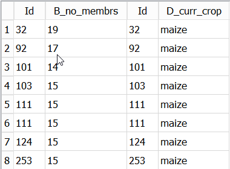
Exercise
- The output includes the
Idcolumn from both tables, how could you have distinguished between them when you wrote the query?- Can you explain why there are two rows for
Id111? Can you change the query so that these two different rows are being correctly displayed?
Solution - click me
Solution
select a.Id as Farms_Id, a.B_no_membrs, b.Id as Crops_Id, b.plot_Id, b.D_curr_crop from Farms as a join Crops as b on a.Id = b.Id and a.B_no_membrs > 12 and b.D_curr_crop = 'maize' ;
- we can add alias' to the two
Idcolumns to distinguish them. - by adding the
plot_Idcolumn from the Crops table. It is clear thatId111 has two plots (plot 1 and plot 2) growing maize.
Different join types
The example of a join given above is called an INNER join, we could have written INNER JOIN rather than simply JOIN. This is almost never done in practice as the inner join is by far the most common join type used.
Other Join types are available...
Before we look at the other join types we need to explain how the Inner join works and why it is so commonly used.
For any join (type) we are defining a relationship between two tables based on the data values in two columns, one from each table.
The relationship is given by the criteria in the ON clause. The value of the column in one table must be same as that in the other table. That is; the criteria is given in the form value_in_column_from_table_a = value_in_column_from_table_b. Only if this criteria is TRUE will the requested columns from table_a and table_b be returned as a single row in the output. During the join process each row of the first with every row of the second and if a match is found then a row combining the columns from both tables is output.
Although typically the values being matched from the first table are a unique (Distinct) set of values, the values in the second table don't have to be unique. This is why in the results of our previous query there are two entries with Id 111. In the second table there are two records with Id 111 and so the record from the first table gets combined with both the records in the second table and two records are output.
Because every Farm grows some crops, there will be at least one record for each Id output. I for whatever reason the was a Farm with no crops then there would be no record output for that Farm Id. Similarly if there was an entry in the Crops table with an Id which didn't match any of the Ids in the Farms table, then it would not be output. There is only an output record when the two columns have matching values.
When a relational database is defined and the tables set up initially the relationship between the tables are already known,
they are part of the design of the overall database. Because of this it is possible to ensure when the data is added to the tables that there will be entries in both tables which have matching values. At the very least you can prevent rows being added to the second table with a value in the column you intend to join on for which there is no matching column in the first table.
An inner join only returns rows where there is a match between the two columns. In most cases this will be all of the columns selected from the first table and 0,1 or more columns selected from the second table.
The relational design makes use of multiple tables as a way of avoiding repetition of data. Joining tables re-introduces the replication of the data.
There are several different join types possible
| Join Type | What it does |
|---|---|
| Inner Join | Matched rows in both tables are returned |
| Left outer join | All row in the left hand table are returned along with the matches from the right hand table or NULLs if there is no match |
| Right outer join | All row in the right hand table are returned along with the matches from the left hand table or NULLs if there is no match |
| Full outer join | All rows from both tables are returned, with NULLs where there are no matches |
| Cross join | Each row in the first table will be matched with every row in the second table. It is possible to imagine situations where this is required but in most cases it is a mistake and un-intended. |
In SQLite only the Inner join, the Left Outer join and the Cross join are supported. You can create a Right outer join by swapping the tables in the From and Join clauses. A Full outer join is the combination of the Left outer and Right outer joins.
Using different join types in analysing your data
In many cases the data you have in your tables may have come from disparate sources, in that they do not form part of a planned relational database. It has been your decision to bring together (join) the data in the tables.
In order to do this at all you must be confident that the tables of data do have columns which have a common set of values that you can join on.
Assuming you do have a common column to join on, you can use an Inner join to combine the data.
However it will also be important for you to establish rows in both of the tables for which there is no matching row in the other table.
- You may expect some to be missing
- You may not care that some are missing
- You may need to explain why some are missing
To do this you will want to use a Full outer join or in the case of SQLite a Left outer join run twice using both tables in the From and Join clauses.
We can demonstrate the Left outer join using the Crops_rice table we created earlier.
The query below is similar to our original join except that we are now joining with the crops_rice table and we have dropped the additional criteria.
select a.Id as Farms_Id, a.B_no_membrs, b.Id as Crops_Id, b.D_curr_crop from Farms as a left outer join Crops_rice as b on a.Id = b.Id
You can see from the results that there is an entry for every record in the Farms table, but unless there is a crop of rice, the entries in the columns from the crops_rice table are shown as NULL.
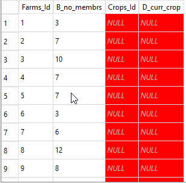
Joins with more than two tables
Joins are not restricted to just two tables. You can have any number, but the more you have the more unreadable the SQL query is likely to become. Quite often you can create views to hide this complexity.
Our original question was: 'Which Farms with more than 12 people in the household grow Maize?' We found the number of people in the household from the Farms table and the crops they grew in the crops table. Suppose we now wanted to change the question to be: For Farms with more than 12 people in the household how much land is devoted to growing Maize? In addition to the previous requirements we now also need the size of the plots growing maize. This information is only contained in the plots table. The plots table has both an Id column which we can use to join it with the Farms column. There is also a plot_Id column which is used to indicate the number of the plot within the Farm. The crops table also has a plot_id column used for the same purpose.
However we cannot join the plots and the crops table with just the plot_id column because the plot_id column is not unique within the Plots table. The plot_id is the plot number within a Farm. So every Farm will have a plot_id with the value 1. In order to make what we join on unique we need to use both the Id column and the plot_id column together. This is allowed and quite commonly done.
Our new query now looks like this:
select a.Id as Farms_Id, a.B_no_membrs, b.Id , b.plot_id as plot_id, b.D02_total_plot, c.Id as Crops_Id, c.plot_Id as crops_plot_id, c.D_curr_crop from Farms as a join Plots as b join Crops as c on a.Id = b.Id and ( b.Id = c.Id and b.plot_id = c.plot_id) and a.B_no_membrs > 12 and c.D_curr_crop = 'maize' ;
Things to notice:
- There is a
joinclause for each of the additional tables - But there is only one
onclause containing all of the needed criteria. - The two criteria in brackets represents the join of the
plotstable to theCropstable. (The brackets aren't needed, I just added them for clarity).
The results look like this:

Exercise
- Modify the query above so that only the 'Id', 'D02_total_plot' and the 'D_curr_crop' columns are shown and at the same time summarise the data so that there is only one entry for each Farm.
i.e sum the 'D02_total_plot' column.
Solution - click me
Solution
select a.Id as Farms_Id, sum(b.D02_total_plot) as total_planted, c.D_curr_crop from Farms as a join Plots as b join Crops as c on a.Id = b.Id and ( b.Id = c.Id and b.plot_id = c.plot_id) and a.B_no_membrs > 12 and c.D_curr_crop = 'maize' group by a.Id, c.D_curr_crop ;